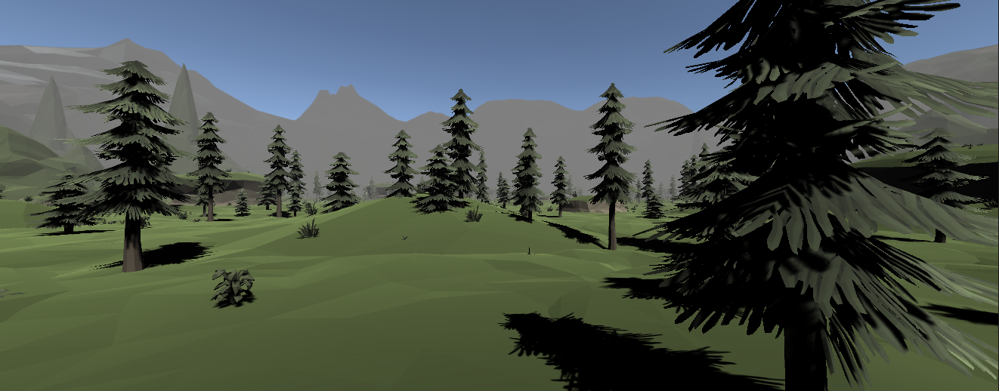
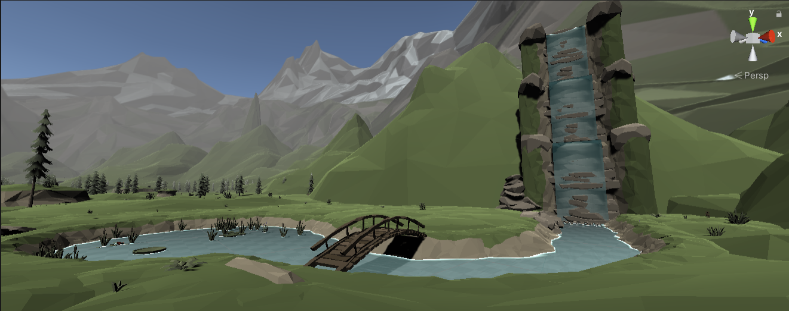
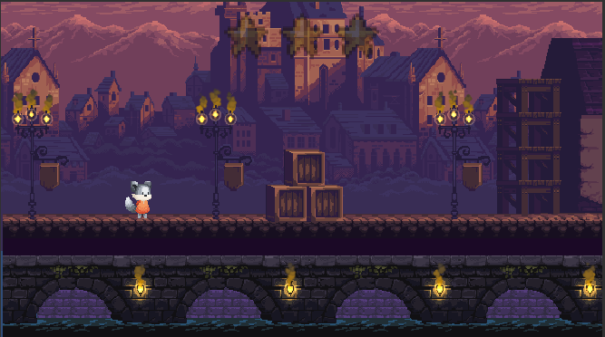

Hello!
I'm Kyle!
A web programmer.

A web programmer.
I am a web developer, with aspirations to become an Executive Producer. I enjoy seeing people become better verions of themselves. Which is why I want to become a coach and mentor to those I meet. I got my Scrum Certification so that I can better achieve that mentorship and leadership role. Not only has it help me with coaching and mentoring, it is helping me to stay prioritized and focused.
I have gained many skills over the years that have helped propel me to reach new heights and learn many new skills. I have taught myself how to create and design levels in video games. Creating anything and making it look good is one skill I have developed over the years and enjoy doing. When a friend of mine introduced me to Web Development, I took to it like a pig to mud. And I am loving it.
HTML and CSS are a new found love for me. When my friend introduced me to it, I couldn't get enough of making something that I have control over designing every aspect of it. I get to see things come to life right before my eyes.
I have been trying to teach myself C#, C++ and Python, with some success. However, it seemed like when I started with HTML and CSS, it made sense. I was able to create things and recreate them with little difficulty. And I have fun doing it.

This year has been exciting for me because I have gotten into actually desgining and building a videogame. I am using the Unity engine currently but plan on expanding to using the Unreal engine to learn how to create more realistic 3D games. It has been an exciting time being able to see my creations come to life and actually work.
One of the best parts about it, is learning new techniques to make something work even better. I love to solve problems and sind the solutions. Another fun thing for me is to add easter eggs for people to find. Just little nods to put a smile on peoples faces.
Below I have some picture examples of what I have been working on. They are also on my Github Repo, which is linked below.




It has been a lifelong love of mine to build things with my hands. However, I never really had a chance to practice. When I finally got my chance to practice, it was an instant hit. Now I am not saying I was perfect (although I like to think I am), I am just saying that I fell in love almost instantly.

My other lifelong love is videogames. I remember my first time playing was at my grandmothers house during Christmas. She had just gotten a nintendo, and a "running" pad. It was for an Olympic Games...game. We figured out that we could just use our hands to hit the pad and it would sense our "running" and make our character run faster. Since that time, I been playing videogames as much as I can. It helps me to relax and just have fun with friends.
Also linked are some of my sites for the different projects I am working on.
Contact Me LinkedIn Github{kind=link}